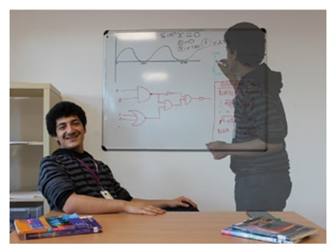

|
About Me
Umut E.
Hi,
my name is Umut. I run this site along with Nasim. I write and
maintain most of the content of the website. I am currently
studying Maths, Further Maths, Physics and Computing at A-level.
I would like to study Electrical Engineering at university. I
love electronics and electricity in general. The infinite
creativity possible by freemoving electrons is amazing. I'd like
to persue a career at Sony Corporation somewhere in the
Semiconductor business. I am a big fan of Sony, adore many of
the technological advancements they have contributed to the
electronic appliances industry and I am forever grateful for
them.
You'll probably see alot of content based on Sony and their
history because of this. I orginally created the site as a
reference for many AS and A2 students like me and Nasim where
the textbook is not enough. I've made most of the content easy
to understand and have written them myself. As well as being an
amazing opportunity for me to revise, I hope it helps many
students at GCSE level and people who just want to get into
electronics and make it easy for them to do so.
Nasim M.
I
have to be thankful for Nasim who has helped me with the
graphical elements of the website. Sure I can code and such
however I'm terrible with art. He has helped me develop the
navigation bar images and other graphical elements of the
website. He is also responsible for some of the content of the
website, seeing that the A-Level specification is a vast library
of knowledge, he has contributed a lot. Thank you Nasim!
Nasim is currently studying Maths, Physics, Biology and
Chemistry and wants to study something in Natural Sciences at
University.
|